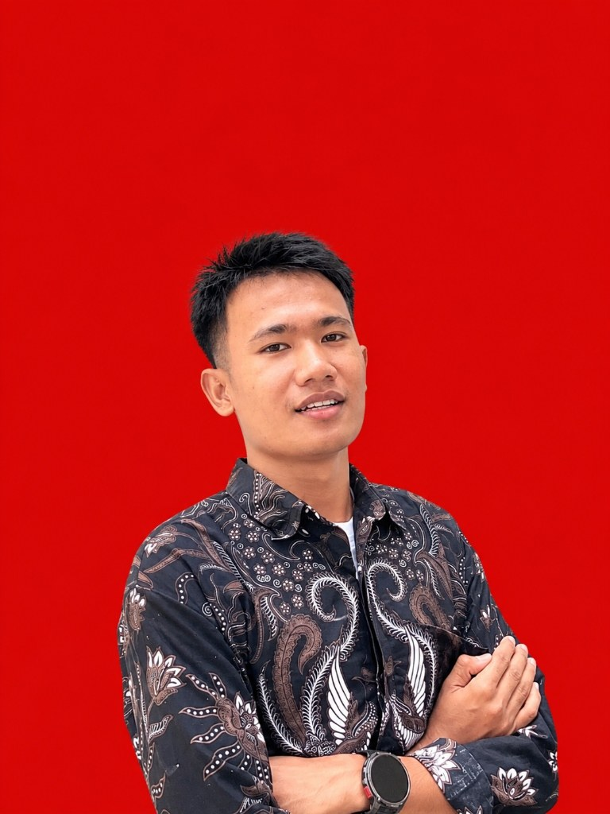

Rebranding & Panduan Identitas Visual UMKM Retail
Perancangan ulang logo monoline modern, pemilihan palet warna korporat navy-emas, tipografi hierarkis, serta desain kemasan produk untuk meningkatkan persepsi nilai jual toko retail lokal.
Graphic Designer • Digital Marketing & Data Analyst
Kreator visual dan mahasiswa Bisnis Digital di Universitas Lancang Kuning dengan pengalaman kerja lapangan di industri energi Kilang Pertamina RU II Dumai dan kepengurusan aktif di HIMABISDI. Ahli dalam merancang identitas visual yang memikat, membaca analitika data pasar, serta mengeksekusi kampanye pemasaran digital berdampak nyata.

Profil komprehensif Daniel Pratama Napitupulu — menyelaraskan estetika visual modern dengan orientasi hasil bisnis dan komunikasi strategis.
Bagi saya, desain grafis bukan sekadar menciptakan grafis yang indah di pandang mata, melainkan medium komunikasi visual yang harus menyampaikan pesan dengan jelas, membangun kredibilitas merek, dan mendorong audiens untuk bertindak secara terukur.
Didukung kurikulum S1 Bisnis Digital, saya mengintegrasikan keahlian analisis data untuk memetakan perilaku audiens, tren pasar, serta performa konten promosi agar setiap keputusan desain memiliki dasar data yang valid.
Pengalaman di Kilang Pertamina RU II Dumai membentuk disiplin ketat, ketahanan kerja di bawah tekanan operasional tinggi, serta kepatuhan penuh terhadap standar keselamatan, ketelitian, dan integritas kerja.
Kekuatan dalam public speaking dan negosiasi memungkinkan saya menjembatani ide teknis desain ke pemangku kepentingan, mempresentasikan konsep di depan forum organisasi, serta menyelesaikan tantangan kolaboratif secara solutif.
Perjalanan pendidikan formal Daniel Pratama Napitupulu dari pendidikan dasar hingga pendidikan tinggi jenjang sarjana di bidang Bisnis Digital.
Mempelajari integrasi teknologi digital dengan strategi bisnis modern, meliputi pemodelan bisnis digital, analisis data analitika pasar, pemasaran digital (digital marketing), komunikasi visual merek, dan manajemen produk digital. Aktif dalam organisasi kemahasiswaan jurusan (HIMABISDI).
Membangun pemikiran kritis, memperdalam kemampuan berorganisasi, serta mengasah bakat awal dalam bidang desain grafis kreatif, komunikasi publik, dan kerjasama kelompok.
Pendidikan komprehensif berbasis nilai karakter kedisiplinan tinggi, kerjasama tim, serta penguatan kompetensi komunikasi dan penalaran akademis.
Fondasi awal pendidikan karakter, etika belajar, literasi dasar, serta ketekunan dalam menyelesaikan tugas dan tanggung jawab.
Rekam jejak praktis Daniel Pratama di sektor industri energi nasional dan dinamika organisasi kemahasiswaan kampus.
Berpartisipasi dalam lingkungan kerja operasional Kilang Pertamina Refinery Unit (RU) II Dumai — salah satu fasilitas pengolahan minyak terbesar dan paling strategis di Indonesia. Beradaptasi dengan budaya kerja bertaraf multinasional yang menuntut kepatuhan absolut terhadap SOP dan keselamatan kerja.
Mengambil peran aktif dalam kepengurusan Himpunan Mahasiswa Bisnis Digital Fakultas Ilmu Komputer UNILAK, bertanggung jawab dalam pengembangan materi visual kreatif, publikasi kegiatan, dan pengelolaan komunikasi eksternal.
Kombinasi sinergis antara keahlian teknis (Hard Skills) di bidang desain dan data dengan kecakapan interpersonal (Soft Skills) yang adaptif.
Eksplorasi proyek desain grafis, visualisasi data, kampanye media sosial, dan materi komunikasi operasional industri yang dikerjakan oleh Daniel Pratama.
Perancangan ulang logo monoline modern, pemilihan palet warna korporat navy-emas, tipografi hierarkis, serta desain kemasan produk untuk meningkatkan persepsi nilai jual toko retail lokal.
Strategi konten terpadu untuk platform Instagram & TikTok: memadukan carousels informatif estetis, copywriting bernilai tambah, dan visual thumbnail interaktif yang meningkatkan jangkauan organik akun organisasi.
Penyusunan model analisis data komparatif performa penjualan bulanan dan preferensi audiens menggunakan spreadsheet canggih, mengubah data mentah angka menjadi grafik visual yang mudah dieksekusi oleh manajemen.
Desain serial infografis dan poster keselamatan kerja terinspirasi dari standar industri Kilang Dumai, menekankan kepatuhan APD (Alat Pelindung Diri), mitigasi bahaya uap minyak, dan jalur evakuasi darurat dengan tipografi berjarak baca tinggi.
Punya kebutuhan desain grafis, kampanye promosi digital, atau ingin berdiskusi seputar peluang kerja sama? Hubungi saya langsung melalui kanal di bawah ini.
Pilih template pesan cepat atau ketik sendiri pesan yang ingin Anda sampaikan ke nomor 085133965577.